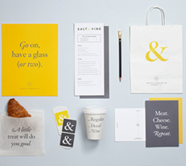
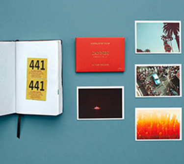
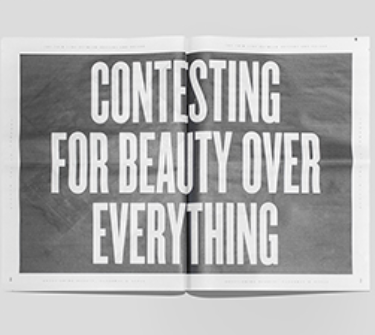

LMNOP specializes in creating unique identities with a playful edge. Born out of a desire to bring style and energy to businesses of all sorts.

Be-poles was launched in the year 2000 in Paris, with a sole objective: to build strong, lasting brand identities.

Journal of the Kitsch is a self-initiated project by Paris-based Art Director Etienne Azar Philippe.